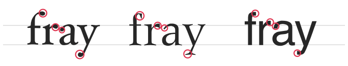

presentation by uniorunr
Apertures are the opening gaps found in certain letters such as c, e, a
The space around the letters are as important as the space within them.
Letters with clear terminals are more readable than letters with lacking terminals.
The combination of thick and thin strokes interrupts the flow of reading.
1. Keep the number of fonts used at a minimum
2. Try to use standard fonts
3. Choose a typeface that works well in various sizes
4. Make sure you have sufficient color contrast
5. Don’t Minimize Spacing Between Lines